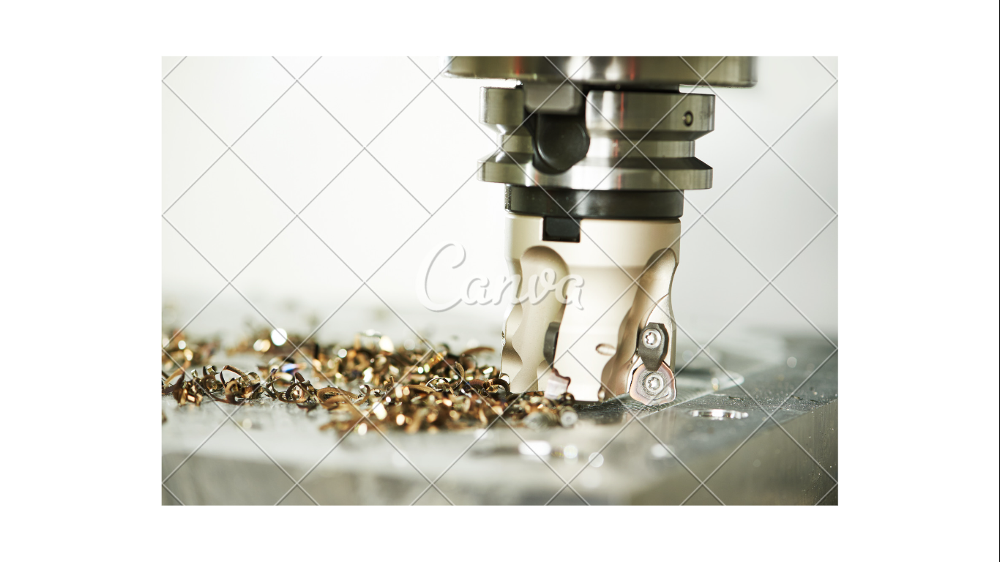

La simulación de procesos industriales es una herramienta poderosa utilizada en ingeniería industrial para modelar y analizar sistemas y procesos complejos en un entorno virtual. Permite a los ingenieros crear modelos matemáticos y de comportamiento para simular cómo funcionan los procesos industriales en diferentes condiciones.
Esta es una herramienta esencial que ayuda a las organizaciones a comprender y mejorar sus operaciones de manera eficiente y efectiva. Al simular diferentes escenarios, las empresas pueden tomar decisiones informadas que impulsan la innovación, mejoran la eficiencia y reducen los costos operativos.